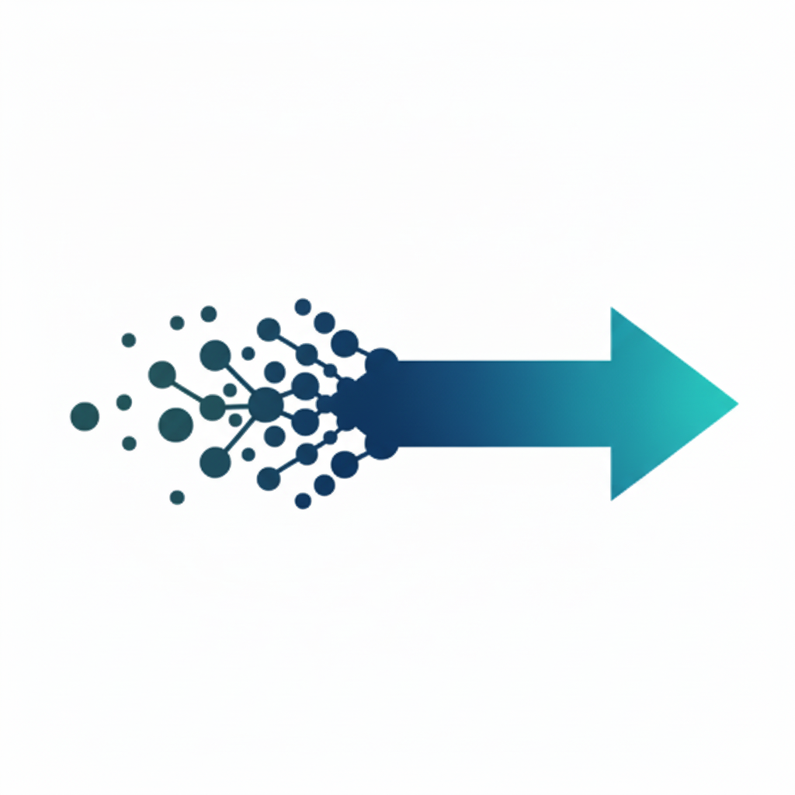

Expert consulting, contracting, and advisory services. Turn complex Data, Analytics, and AI challenges into high-value business solutions.
Discuss Opportunities TodayWe understand that everyone is at different stages of their Data, Analytics & AI journeys. Whether you're taking your first steps or have been blazing a trail, we meet you where you are and get you where you're going.

Lay or reinforce the groundwork for your organisation to effectively leverage Data and AI in the modern era.
Deliver value effectively using AI and Machine Learning. Tuned to your business needs, from ideation to delivery, from enterprise roll-out to niche solutions.
Optimise your performance with advanced analytics. Specialising in Marketing, E-commerce, and Contact Centre domains.
"Conor was instrumental in bringing a high-value, LLM-based app from idea to production at BHP. Despite being unfamiliar with the field of equipment maintenance, he rapidly grasped the domain and helped design and deliver a clever solution balancing strategic goals with pragmatic realities.
Conor's strong attention to detail and value-bias through the delivery phase helped drive an efficient, effective solution that will save us years of manual effort into the future. He was a pleasure to work with and I value his guidance and insight in the practical application of AI."
- Rob Holmes, Principal for New Technologies at BHP"Conor supported myself and the SEO team on many occasions to separate the signal from the noise. His careful analysis of our data, along with the attention he gave to fully understand what the data actually meant, led to strategic insights that were built upon to great commercial success."
- Oliver Braithwaite, Head of SEO at Compare The Market"Conor advised on and designed an audience segmentation study for Pacific. He is excellent at distilling down a vast list of requirements and expectations into the core objectives and prioritising accordingly. I loved the fact that Conor would take extra time to explain his approach to modelling and give context behind his decisions. On top of that he is a genuine delight to have around!"
- Rebecca Alexander-Head, Director of Strategy and Insights at Seven West MediaConor is a seasoned data, analytics, and AI leader with over a decade of experience across financial services, e-commerce, travel, mining, and media industries. Specialising in advanced analytics strategy and execution across marketing, product, and call centre domains, he helps organisations make data-driven decisions and deliver impactful, growth-driving solutions.
Recognised as a Global Top 100 Data & Analytics Leader by Corinium in 2023, Conor is also a frequent speaker at technology leadership conferences and is committed to delivering actionable, real-world results for his clients.
Connect on LinkedIn: linkedin.com/in/conoroneill1
Whether you're ready unlock value through data or just want to understand what's possible, let's talk!
Get in TouchBrisbane, Australia